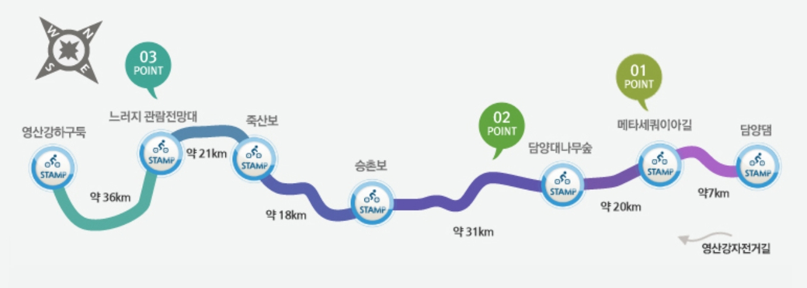

| 코스명 | 영산강자전거길 |
| 코 스 | 순창버스공용버스정류장-담양댐인증센터-메타스퀘이아길인증센터-담양대나무숲인증센터-승촌보인증센터-죽산보인증센터-느러지전망관람대인증센터-영산하구둑인증센터-목포역(KTX) |
| 교 통 |
가는길 : 광명역(KTX)-전주역(KTX)-전주공용버스터미널-순창공용버스터미널 오는길 : 목포역(KTX)-광명역(KTX) |
| 거 리 | 133km (실제소요거리 : 151km) |
| 시 간 | 8시간 50분 (실제소요된시간 : 7시간10분) |
| GPX 파일 | 영산강자전거길 GPX 다운로드 |

이번라이딩은 영산강 라이딩이다. 전에는 버스를 이용하여 이동을 하여 버스에 자전거를 실는 것이 경쟁이 심하여 어려움이 많았는데 이번 라이딩은 KTX를 이용하여 이동하기로 하였다.
당연히 KTX를 타기 위하여 자전거 가방을 구매하고 타기전에 자전거를 가방에 넣고 KTX의 중간 짐칸에 실고 편안히 이동할 수 있었다.
전주역에 도착하여 버스로 순창까지 1시간 30분 가량 이동을 한 후 순창공용버스정류장에서 첫번째 인증센터인 담양댐인증센터로 공도 및 자전거도로를 이용 라이딩하였다.
메타스퀘이아길에 들어서니 비록 공도지만 해피프라이데이를 이용하여 금요일에 라이딩을 하여 차량도 많지 않고 탁 트인 길이 매우 아름다웠다.
그러나 그것도 잠시뿐 담양에서 나주로 가는 길은 너무나도 험난하였다. 익히 유튜브등에서 듣고 보아서 길이 좋지 않다고 알고는 있었지만 비포장도로도 있고 도로의 상태도 울퉁불퉁하여 매우 좋지 않았다.
나주를 벗어나 목포로 가는 길은 그나마 상태가 괜찮았다. TV의 어쩌다 사장에 많이 나온 공산면을 지날때에는 안개가 많아 주변 경관을 보지 못해 아쉬움이 있었지만 목포에 가까이 가니 서늘한 바람과 함께 날씨도 좋아 매우 즐거운 라이딩을 할 수 있었다.
특히 새로 도로가 개설되고 있는 곳에는 차가 없고 포장이 잘 되어 있어 마음껏 달리기도 하여 그나마 좋지 않은 길에서 고생한 보상을 받는 것 만 같았다.
나주에서 먹은 삼합은 색다른 맛을 느낄 수 있어 좋았으며, 가격도 착하여 매우 만족한 저녁을 즐길 수 있었다.
마지막 종착지인 영산강하구둑인증센터를 지나니 많은 사람들이 토요일 라이딩을 즐기러 나와 있었으며, 우리일행은 마지막 목포시내에 맛있는 점심을 먹고, 다시 목포역에서 KTX를 이용하여 집으로 돌아오는 즐겁고도 편안한 라이딩을 하였다.
이번 라이딩은 KTX를 이용하여 이동하여 항상 시작과 끝을 버스터미널에서 같은 라이딩족이 몇명이 있는가에 따라 희비가 엇갈리는 현장을 벗어나 편안하고 즐거운 여행길이 될 수 있었다.